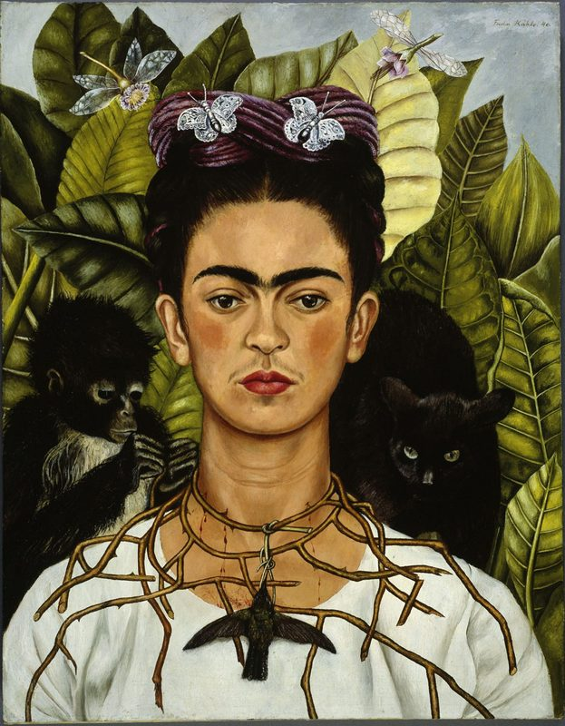

The Broken Column
She painted her pain so the world would have to look — and now the world cannot look away, and it hurts.

The Broken Column
She painted her pain so the world would have to look — and now the world cannot look away, and it hurts.
Feature map
Level-by-level features, as the figure refined them.
Viva la Vida
Exhibited Pain — Reaction · 1 CE · The Shared Wound — Bonus action · 2 CE.
Tier II · Support / Tank (Pain-Share) · Suggested CE ability: CON · Primary verb: Endure. Technique DC = 8 + proficiency bonus + CON modifier. All backlash damage is psychic — it is felt, not inflicted.
- Exhibited Pain (Reaction, 1 CE): when you take damage from a creature's attack or effect, the attacker feels it — it takes psychic damage equal to your CON modifier + your proficiency bonus. No save, no attack roll: it is a mirror, not a blow. - The Shared Wound (Bonus Action, 2 CE): touch a willing ally. For 1 hour, half of all damage the ally takes (rounded up) is redirected to you instead. You may maintain this on one ally at a time. Someone else volunteered to carry it.
The Broken Column
Gallery of Nails — Bonus action · 3 CE.
- Gallery of Nails (Bonus Action, 3 CE, 1 minute): a 30-ft aura — the exhibition opens. Enemies in the aura that deal damage to anyone feel it: they take psychic damage equal to half the damage dealt (WIS save vs your DC halves). Allies in the aura gain a +2 bonus to saves against being frightened or charmed — we have survived worse than this. - Exhibited Pain now triggers against any damage source you can perceive, not just attacks.
Henry Ford Hospital
Passive.
- Wards (passive): your Shared Wound may now cover up to PB allies at once (one bonus action, +1 CE per ally beyond the first). - What the Water Gave Me (passive): once per short rest, when you drop below half your hit point maximum, you may immediately end one condition affecting you — the pain clarifies.
The Two Fridas
Two Hearts, One Wound — Action · 6 CE.
- Two Hearts, One Wound (Action, 6 CE, 1 minute): choose one ally bonded by your Shared Wound. For the duration, all damage they would take is redirected to you (not half), and your Exhibited Pain backlash is doubled. The painting: two Fridas on a bench, hearts connected by a single artery, sharing one wound between them. - Your Gallery of Nails aura radius increases to 60 ft.
Self-Portrait with Thorn Necklace
Passive.
- The Permanent Exhibition (passive): while you have any CE remaining, your Gallery of Nails aura is always active — no activation required. You are always exhibiting. There is no more green room; the pain is always on the wall. - Thorns (passive): your Exhibited Pain now reaches outward — when an enemy in your aura deals damage to one of your allies, that enemy takes your Exhibited Pain backlash (psychic damage equal to your CON modifier + your proficiency bonus; no save, no attack roll) even though you took no damage yourself. (Invented fix — zack: confirm this is the intended L18 distinction; L3's Gallery of Nails already covers ally-damage with a WIS-save backlash.)
Maximum, Domain, or equivalent.
Capstone material.
"I Hope the Exit Is Joyful" (Capstone)
- The Pain That Stays (passive, triggers on death): Frida's last journal entry — "I hope the exit is joyful, and I hope never to return" — was Heaven-witnessed, and Heaven keeps its promises slantwise. When Frida dies, she does not leave the room: - For the remainder of the story arc, her presence lingers within 60 ft of where she fell as the pain that stays in the room after the body leaves. - Once per round, when an ally within that radius takes damage, the attacker takes psychic damage equal to her CON modifier + PB — no action, no CE, no save. Exhibited pain, still exhibiting. - Any ally who witnesses this (who understands what they're seeing) gains advantage on saves against fear for the rest of the arc. She is still teaching. - This is not world-shaking. It was never meant to be. It is a woman's last painting, hung where her friends can see it, refusing — one final time — to suffer privately.
Build-defining options.
Historical-figure techniques grant no feats — the figure's art is complete as written, and the builder's feat picker excludes these techniques. Take the progression as the build.